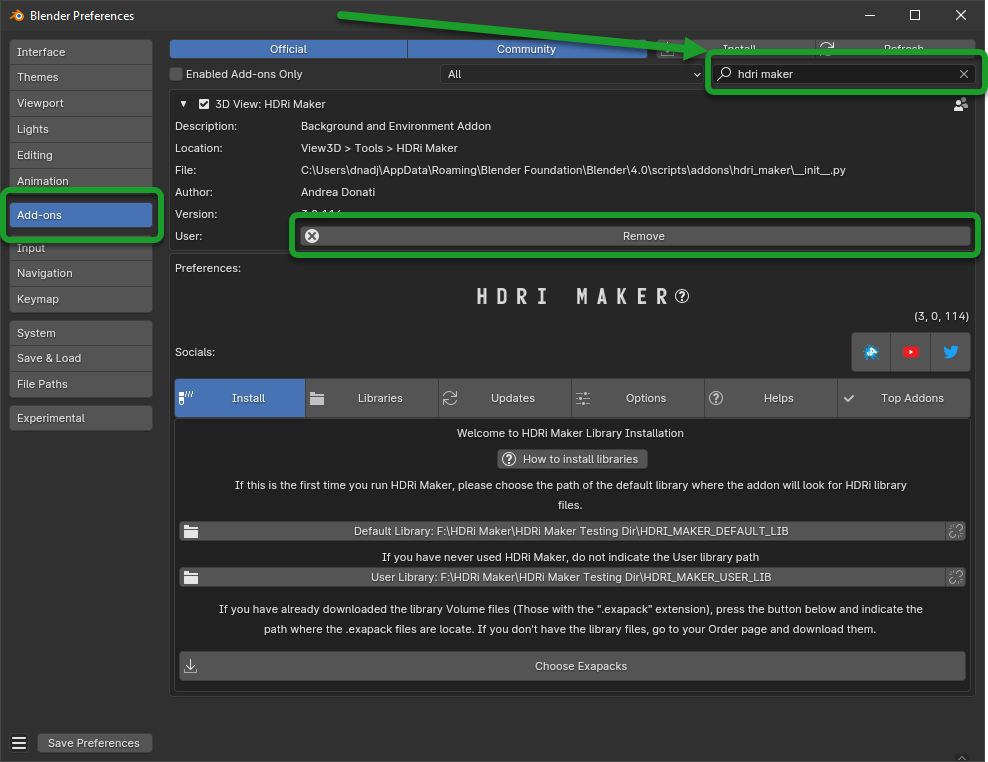
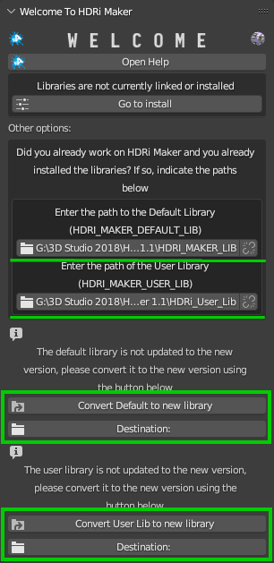
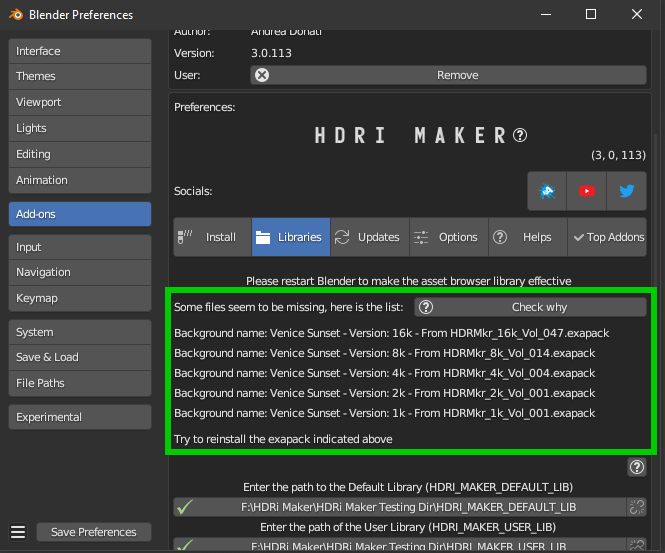

Installation
Below 2 videos dedicated to 2 different types of users (New and old users) who want to install or update the addon:
!Please read carefully before proceeding with the installation!
I suggest you to watch the videos about the installation.
Tip
This video shows how to install HDRi Maker 3.0 (Studio edition) from scratch. If you already have version 2.0 and you need to update go to the next video
In this video we will see how to update HDRi Maker 2.0 to version 3.0 (Studio edition) if you are a new user follow the previous video, not this.
Note
If you are already a HDRi Maker user and you currently have a version prior to 3.0.100, please uninstall it and proceed with the installation of this new version. If you already have a version 3.0.100 or higher, you do not need to uninstall the previous one.
Instal the addon
The first step is to install the addon in Blender. Below are instructions for installing the addon
Download the files
Tip
You can download the .exapack files little by little and install only 1 volume at a time, it doesn’t matter the order.
I suggest you to download first the HDRMkr_1k_Vol_001.exapack and the HDRMkr_Main_Vol_001.exapack packages.
You can install the others at any time. The addon recognizes what has already been installed and what not.
This will allow you to try HDRi Maker while the other files are downloaded
In your product page, you can find various files, the main ones for the installation are the following:
hdri_maker_v301##.zip is the addon for blender, this is the first element to download and install

HDRiMkr_##_Vol_#.exapack are the files of the library. and they are divided with increasing number. Example of downloaded .exapack files on the computer, below in the image:
{kind=link}
HDRMAPS_VOL_##.zip These are the files of the library that I have inserted thanks to the support of the author of these backgrounds Grzegorz Wronkowski you can find these maps also on the site https://hdrmaps.com/ They are free and are granted under the CC BY license, you can find them at this link: https://hdrmaps.com/freebies/free-hdri-maps/
The .exapack files are installed by the addon, they do not need to be installed manually! After installing the HDRi Maker addon, it will manage your exapack packages and install them. (You will see in the following steps)
Note
For Mac users: it often happens that Safari Browser is set to decompress .zip files, make sure this does not happen, otherwise the .zip file will no longer be a .zip file and you will not be able to install the addon as follows.
Just go to the Safari menu bar at the top left and click on Safari>Preferences, then remove the check mark from “Open safe files after download” in the “General” window. Done, if in the future you download zipped files with safari, they will no longer be unzipped.
Install Into Blender
Download the addon and install it in Blender, the procedure is as follows:
Important
If you are updating the addon from a version HDRi Maker 3.0.X series to a higher version you absolutely must not download the libraries again! The addon once installed in addition should already recognize the paths of the libraries
Download the addon (Remember that you must be logged in to the site where you purchased the addon):
If you purchased on Blendermarket you can find the addon here:
If you purchased on Gumroad you can find the addon here:
Addon name Example: hdri_maker_v30100.zip (The number can be different, it depends on the version you are downloading)
Important
The addon file must remain in zip format! Do not unzip the file, otherwise you will not be able to install it correctly. This note is especially for Mac users. If you do not know how to prevent Safari from decompressing zip files, take a look here Download the files
- Uninstall previous versions This step is only necessary if you had a version of HDRi Maker
previously installed in the current version of Blender
Edit > Preferences > Add-ons > HDRi MakerPress REMOVE and save the preferences (Only if you have not set the automatic saving of preferences)
Note
I suggest restarting Blender after this step, so as to be sure that the new version does not conflict with the old version in the current session of Blender.
{kind=link}
Once the addon is downloaded, open Blender and go to:
Edit > Preferences > Add-ons > Install
Select the downloaded file (hdri_maker_v30100.zip <– !This name is only an example!) and click on “Install Addon” (The name of the file can be different from version to version)

If everything went well, the addon is in the list of installed addons, you can also search for it by typing “HDRi Maker” Mark the checkbox to activate it.

Install The library
If you have installed the addon correctly, now you can proceed with the installation of the library.
Note
If you are a user coming from a version of HDRi Maker 2.0 you can convert your library HDRI_MAKER_LIB In the new library, just follow this guide: Convert Old Library This allows you to avoid downloading the library 1k 2k 4k and 8k. In addition you can check later what you are missing in the library via the menu in the preferences under “UPDATES” (TAB) in which under you will have the full picture of what is online and what you have already installed.

Step 1
Download the file HDRiMkr_1k_vol_1.exapack, this is the package containing the 1k resolution files, it is also the smallest package in terms of Size, so it is easy and fast. You can download the others at any time. You can download all the .exapack files and run everything at once if you wish
Step 2
When you have finished downloading the exapack files you want to install, go to the HDRi Maker Preferences window and go to the Install Libraries (TAB) section and press the “Default Library” button you see in the following image in red.
Tip
If you do not see the HDRi Maker Welcome panel, you can open it by pressing the “N” key on the keyboard.

When you press this button, a file browser will open, you will have to choose a location on your computer where the root folder of the entire Default Library will be created
Warning
Do not choose the path in the path where blender installs the addons!
Avoid choosing paths on LAN connected disks, resources may not be reachable
If you are also installing the expansion.exapack, these will be installed in another root folder, in the same location where the Default Library is located
It is not recommended to use an external Hard Disk connected via USB (Unless it is an external SSD disk)
Step 3
Now the situation should look like this, where the “Choose Exapacks” button appears.

Press the “Choose Exapacks” button and select the .exapack files you just downloaded. You can choose them all, just make sure to select them within the File Browser. (The files not selected will be ignored) Then press the button in the file browser window Choose Exapacks to confirm

Step 4
Now you should have the list of exapack files selected, in list, ready to be installed, you will just have to press the “Install From Exapack Files” button to proceed with the installation. As follows in this image:
Note
The exapack files are deleted once installed by the addon, this is for space issues if you want to keep them (Not Recommended) check the “Keep Exapack After Install” box and the files will be kept on the disk. But be careful, this means that you will have the weight of the library almost X2
{kind=link}
During the installation process of the .exapack packages, the interface will show the progress of the installed packages You can also stop the process whenever you want (Just press the button (X) next to the big status bar) in this case, the installed packages will remain installed.
Important
I want to emphasize: All installed packages will remain installed, even if the installation process is interrupted. If the installation is resumed, the installation process will resume from where it was interrupted, because the addon recognizes the already installed files and skips them.

Note
The installation speed depends a lot on the type of disk in use, I have done various tests, and the installation on SSD is very fast. I do not recommend the use of an external Mechanical Hard Disk connected via USB only for time issues, I noticed that these disks are very slow for this process. But if you do not have time problems and you have patience, you can decide to use it.
Step 5
When you have completed the entire (or even just in part) installation, the addon will be ready to be used: In this image we see that this Background is present in 3 different resolutions, 1k, 2k and 4k, the 8k and 16k versions can be installed via exapack also at a later time (If needed)
{kind=link}
Note
The 1k, 2k, 4k, 8k, 16k versions are present in the complete edition. Some versions may not contain all the resolution versions. If you want to upgrade to the full version, you only pay the difference
At the end of this process, on your computer, in the indicated path, 2 folders will have been created (3 if you also installed the HDRMAPS expansion)
HDRI_MAKER_DEFAULT_LIBRARY (This folder contains all the files of the HDRi Maker libraries)
HDRI_MAKER_USER_LIBRARY (This folder is an empty folder, and will be used in case you want to save your personal HDRi)
If you also installed the HDRMAPS expansion, then a third folder will also be created and will be named after the expansion.
To manipulate the paths to the libraries, it is enough to go to the HDRi Maker settings and go to the Libraries (TAB) section
For more information on this section you can find the chapter Libraries Tab

About Exapack
As for the libraries, from version 3.0.100 onwards, they will be distributed in the form of exapack packages. All new packages will be in the form of numbered volumes Here is an example of nomenclature
Default Library
HDRiMkr_1k_vol_1.exapack: Contains files from 1k, previews, and data files
HDRiMkr_2k_vol_1.exapack: Contains files from 2k, previews, and data files
HDRiMkr_4k_vol_1.exapack: Contains files from 4k, previews, and data files
HDRiMkr_8k_vol_1.exapack: Contains files from 8k, previews, and data files
HDRiMkr_16k_vol_1.exapack: Contains files from 16k, previews, and data files
The packages are consecutive, Vol_1, Vol_2, Vol_3, I tried to limit as much as possible the size of the packages, so that their maximum is around 2GB (Some can reach 2.5GB). This limit to avoid download and installation problems, since those who have a slower connection, could encounter timeout problems.
Note
The large size packages like 8k and 16k will have more volumes, because they are much larger. The small size packages like 1k and 2k will have less volumes, because they are much smaller.
Expansion Library
As for the expansions that are always distributed in the form of .exapack, the nomenclature may vary. For example, the expansions of HDRMaps are distributed without the resolution variant, this because it is a much smaller library.
{kind=link}
Update The Addon
From time to time, I release updates. They can be checked from the Preferences menu “Updates” (TAB) here: Updates Tab In that section you will understand if the addon is updated or not.
If a new version of the addon is available, you can find it on the download page of the site where you bought the addon.
Download it, uninstall the previous version Do not remove the libraries, if you had already installed them there is no need to reinstall them and install the new version. The steps for the installation can be found above here: Installation
Convert Old Library
If you are a user who owns the libraries prior to version 3.0.100, you can convert the libraries without having to download them again. To do this, you just need to follow these simple steps:
Install the new HDRi Maker (Uninstall the old one and install the new one) Do not remove the libraries!
Open the new HDRi Maker
From the main panel of HDRi Maker, enter the paths to your libraries (Default and User)
The libraries, if old version, are recognized as such, so a button for conversion will appear
In this image, we see that 2 old version libraries have been connected to the 3.0.100 version. The addon recognizes them automatically and asks us to convert them.
It will be enough to indicate the paths where you want them to be converted and click on the “Convert” button to start the process.
This process creates a new folder with the new structure of the libraries. In this way, it is not necessary to download the libraries again that are already present on the computer.
(If you want to avoid this step, you can simply download the libraries again and don’t worry about this)
{kind=link}
Move Libraries/Relink
If you intend to move the libraries, you must follow these simple steps:
Find the path of the libraries (Default and User) which usually have the name ‘HDRI_MAKER_DEFAULT_LIBRARY’ and ‘HDRI_MAKER_USER_LIBRARY’
Copy the folder to the destination disk (For example you can copy it to an external USB disk)
Connect the USB disk to your destination computer
Install HDRi Maker on Blender on your destination computer (Do not run the installation of the libraries)
Open the new HDRi Maker
Now go to the “Preferences” panel and go to the “Libraries” (TAB) section

Enter the paths of the libraries Default (1) and User (2) that you copied to the USB disk
If you also copied the Expansion libraries, add an expansion library and indicate the path of the folder (3)
Attention
In the library there is a folder named “._data” if this is not present the program will not recognize the library as valid and it will not be able to be used. If something does not work check that the folder is present. (It may be necessary to view hidden files to see it) Depending on the operating system in use, make sure to proceed to the display of hidden files if you intend to search for the folders “._data”.
Problem with the installation
Below are some problems that may occur during installation and how to solve them. This section will be expanded as new problems are reported.
The addon does not install correctly
Make sure to:
Use an official version of Blender downloaded from the official Blender website: https://www.blender.org/download/
Use a version preferably 3.0 or higher
Have enough space on the disk (The complete library takes up a lot of space)
Problem with corrupted exapack

It can happen that during the download of an exapack, the download is interrupted for one reason or another. Among the main causes of interruption of the download, there are:
The computer shut down unexpectedly
The internet connection was interrupted
The server timeout has been reached –> To solve this problem, try to download fewer files at the same time
In these cases, the downloaded file may be damaged, and therefore it cannot be installed. This you can check at the time of the installation of the damaged exapack, so download the damaged exapack again
Create Asset Browser
Here below is indicated the procedure to create the asset browser
Note
To create the asset browser it is necessary that the addon is correctly installed and that at least one library has been installed. In addition, make sure you have a version 3.0.110 or higher of HDRi Maker
{kind=link}
To create the asset browser, you must have installed the HDRi Maker libraries.
Video Tutorial
Steps
Procedure:
Open a new Blender project and do not save it (This is essential, it is a matter of security not to risk damaging your projects)
Make sure you have installed version 3.0.110 of HDRi Maker or higher
Press the “Open Preferences” button
Go to the “Libraries” tab, If all the libraries have been installed correctly, you should see a situation like this, they will be

Press the button in the list of buttons in the “Make Asset Browser” box to create the corresponding version also in the asset browser
During the process of Creating the asset browser, it may be necessary to wait a few minutes, you can interrupt the process by pressing the “X” button next to the progress bar, this will stop the process, but will already make the conversions done up to that moment effective
Restart Blender to make the changes effective
Set the Asset Browser in the Blender screen area:
{kind=link}
{kind=link}
Now in the list of assets you should see the new assets, repeat this operation for all the HDRi Maker libraries
Warning
Current limitations in Asset Browser:
Backgrounds applied via Asset Browser are not automatically applied to the dome. What convinced me to do this function is the mere fact of having the possibility to apply only the Backgrounds on the fly directly from the Asset Browser. But at the moment I think that the use of HDRi Maker is more complete through its interface (Which already has its own Browser) I received many requests regarding the asset browser which led me to create this new feature. But at the moment Blender’s Asset Browser has some big limitations on the Python side, so many things still can’t be done.
Surely in the future they are planned.
Missing Files during the asset browser creation
It can happen that during the process of creating the Asset Browser through the buttons present in the options of HDRi Maker Example: (Only from HDRi Maker version 3.0.113 and higher)
That a message like this occurs:
{kind=link}
In this case the message is useful because during the process of creating the asset browser the HDRi Maker has detected some missing files from the library, the reasons can be various, among the most common I have been told that some files have been mistakenly deleted manually (It can happen), among the less common, the cause is still to be understood well.
What does this message mean?
There is a list of missing files in this message, in which it is indicated:
Background Name: This is the name of the missing background
Version: This is the version of the background, for example it could be the 1k, 2k, 4k, 8k, 16k version or another name (It’s not very important)
From: This is important because it says from which Volume the missing file comes from, so the name of the volume.exapack
So in the end, this is very useful to understand which Volume exapack contains that file, so that if you have to reinstall or download that package again, you will know exactly which one to install.